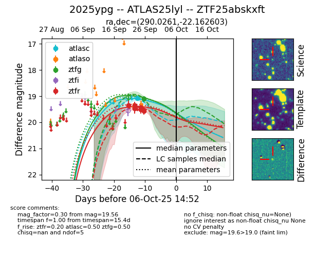
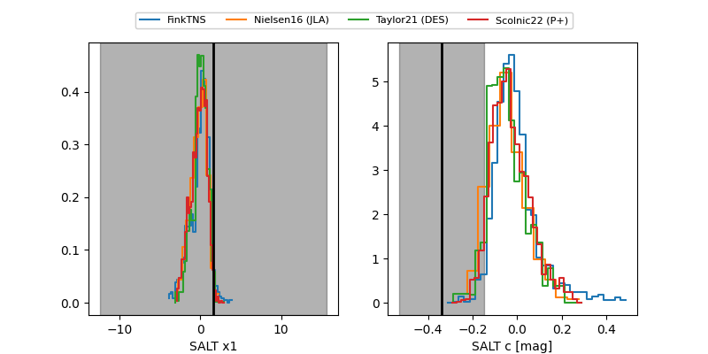

FINK: ZTF25abskxft
Lasair: ZTF25abskxft
ALeRCE: ZTF25abskxft
TNS: 2025ypg
YSE: 2025ypg
ZTF25abskxft (ztf,fink)
2025ypg (tns,yse)
ATLAS25lyl (atlas)
equatorial (ra, dec) = (290.0261,-22.16260)
galactic (l, b) = (15.8110,-15.95253)


last atlasc=19.07, ztfg=19.11, ztfr=19.56
1 atlasc, 1 ztfg, 6 ztfr detections